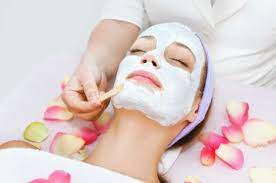
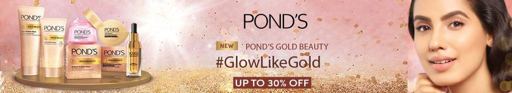
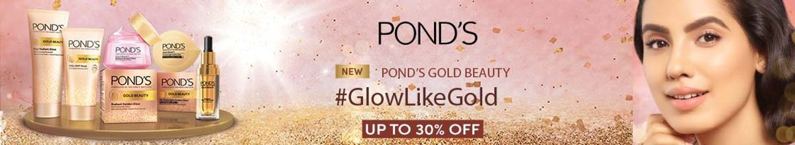

HERE IS ALL BEAUTY FACILITY AVAILABLE
 Waxing
Facial
Lip
Lip And Chin
Forearm
Eyebrow Tint
Eyelash Tint
Pedicure
THE Core Facial
THE AGE Smart Facial
Facial Massage and Facial Yoga.
For hygiene purposes we do not dip the same spatula twice.24 hour patch test advised.

Waxing
Facial
Lip
Lip And Chin
Forearm
Eyebrow Tint
Eyelash Tint
Pedicure
THE Core Facial
THE AGE Smart Facial
Facial Massage and Facial Yoga.
For hygiene purposes we do not dip the same spatula twice.24 hour patch test advised.

Facial massages are a common practice that a lot of women follow as a part of their beauty routine, and rightly so,
because of there too many benefits of a face massage. It is a natural way to relieve stress and is to enhance your mood.
This is an amazing beauty tip for the face as it helps stimulate the production of collagen and blood in the skin. Regularly massaging your face tightens skin and lifts your facial muscles.
This is an amazing anti-ageing treatment and works well to give you a youthful glow. Additionally, face massages also benefit inflamed skin conditions such as acne and rosacea.
Light manipulation on the skin increases blood flow and oxygen which is needed for healing, plus it helps to expel toxins that are often responsible for breakouts.